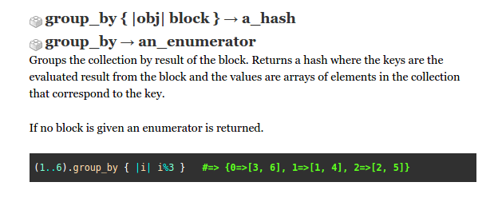

Enumerable Methods
I recently learned about group_by after a good 2 hrs struggle without knowing of it's existence
06/15/15
Method summary: groups - by result of block - returns a hash

I used it to replace this block of code:
def mode(array)
hash = {}
solution_array = []
array.each {|i| hash[i] ||= array.count(i)}
max_count = hash.values.max
hash.each {|k,v| solution_array << k if v == max_count}
return solution_array
end
def mode(array)
return [] if array.empty?
groups = array.group_by{ |e| e }.values
max_count = groups.max_by{ |set| set.count }.count
groups.select{ |set| set.size == max_count }.map{|set| set.first }
end